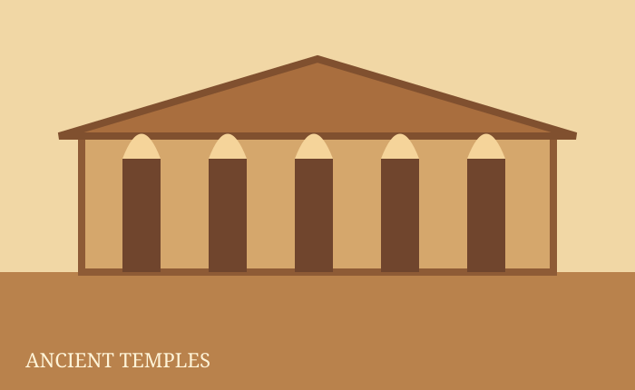

The History of Ancient Egypt

Ancient Egyptian civilization developed along the River Nile. The river provided water and fertile land, helping farming communities grow into a powerful and organized society.
Egypt was ruled by kings known as pharaohs. They led the country, supported religious institutions and commissioned large buildings, including temples and royal tombs. Different periods of Egyptian history saw changes in rulers, art and political power.
Writing and knowledge
Ancient Egyptians used hieroglyphic writing on temple walls, monuments and other objects. They also developed practical knowledge in mathematics, medicine, astronomy and construction.
Historical legacy
Archaeological discoveries, inscriptions and preserved monuments help historians understand daily life, beliefs and government in ancient Egypt. This legacy remains an important part of world history.